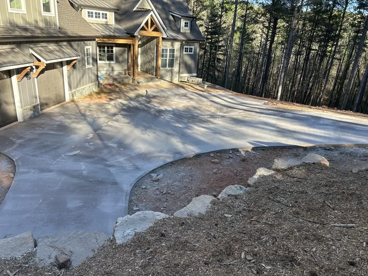
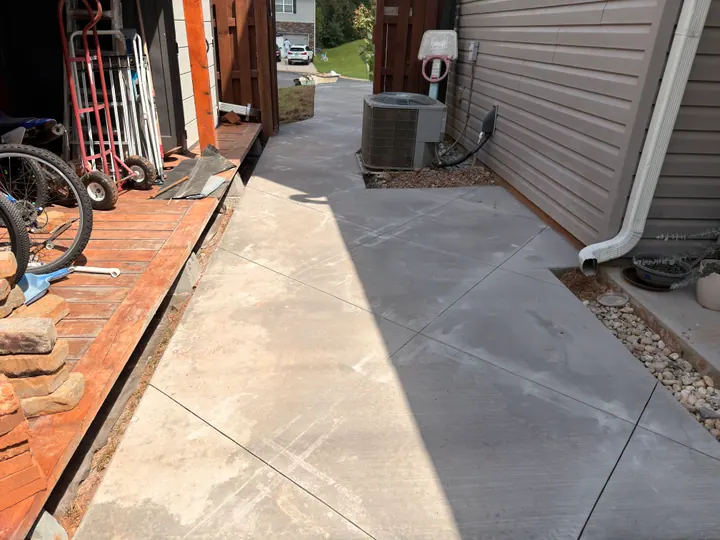
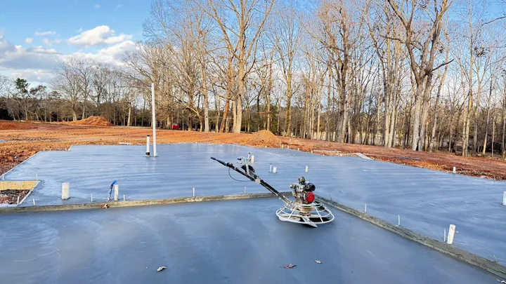
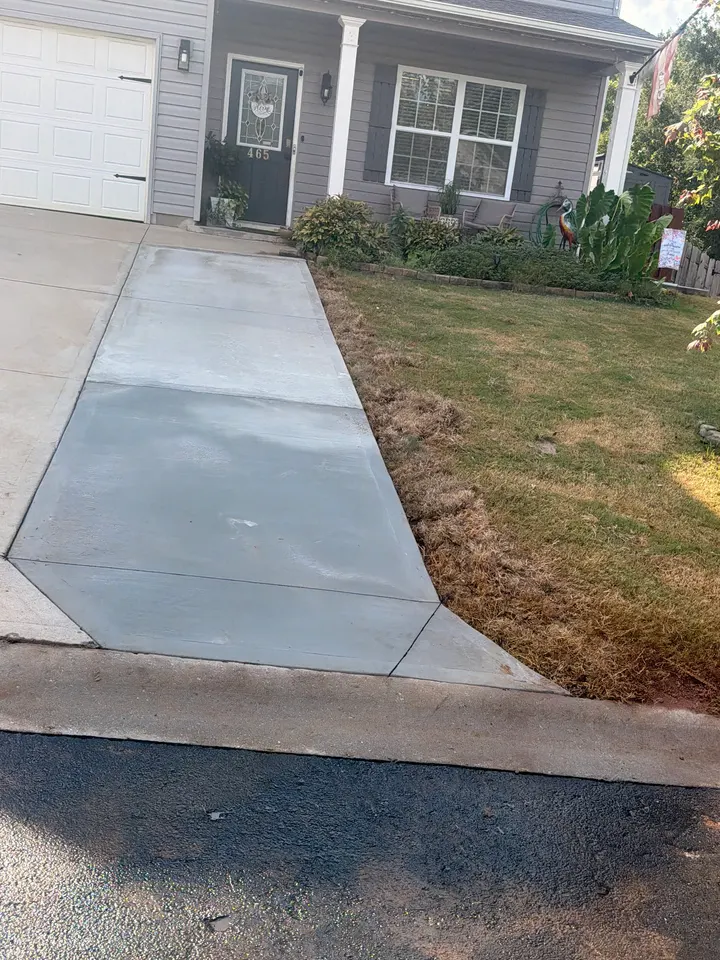
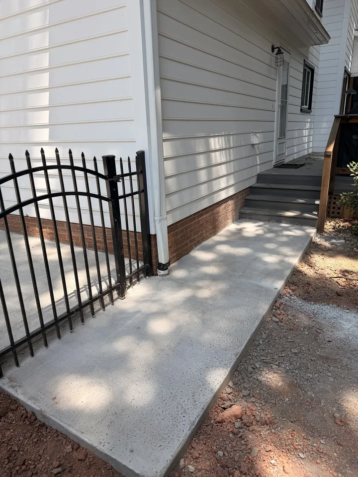
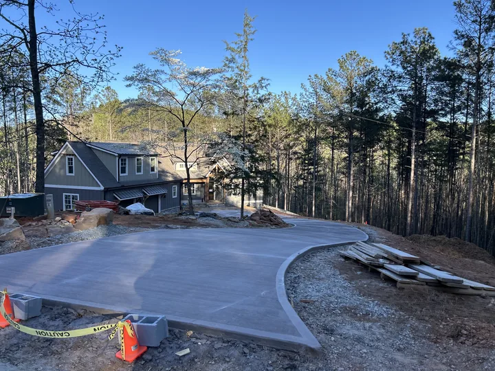

01 · Concrete
Concrete
Durable concrete begins with the base, drainage, formwork and placement—not just the surface finish.
Residential concrete
- Driveways and extensions
- Patios and slabs
- Sidewalks and steps
Repairs and replacement
- Concrete repairs after inspection
- Removal and replacement
- Project-specific preparation





